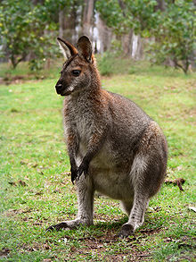

wallaby
A wallaby (/ˈwɒləbi/) is a small or middle-sized macropod native to Australia and New Guinea, with introduced populations in New Zealand,[1] Hawaii, the United Kingdom and other countries. They belong to the same taxonomic family as kangaroos and sometimes the same genus, but kangaroos are specifically categorised into the four largest species of the family. The term "wallaby" is an informal designation generally used for any macropod that is smaller than a kangaroo or a wallaroo that has not been designated otherwise.[2].